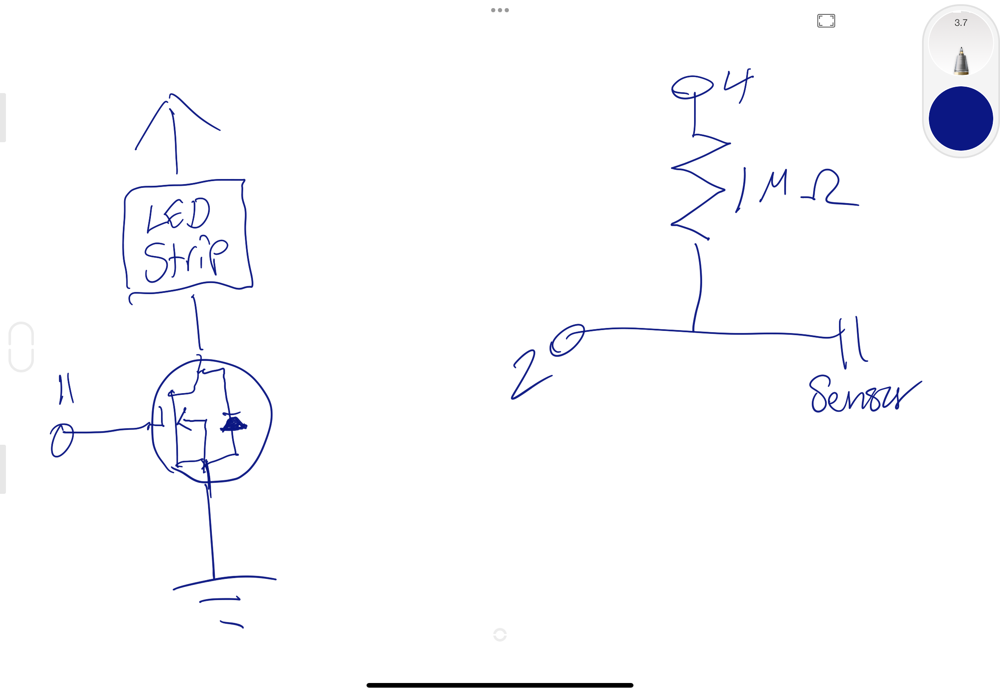
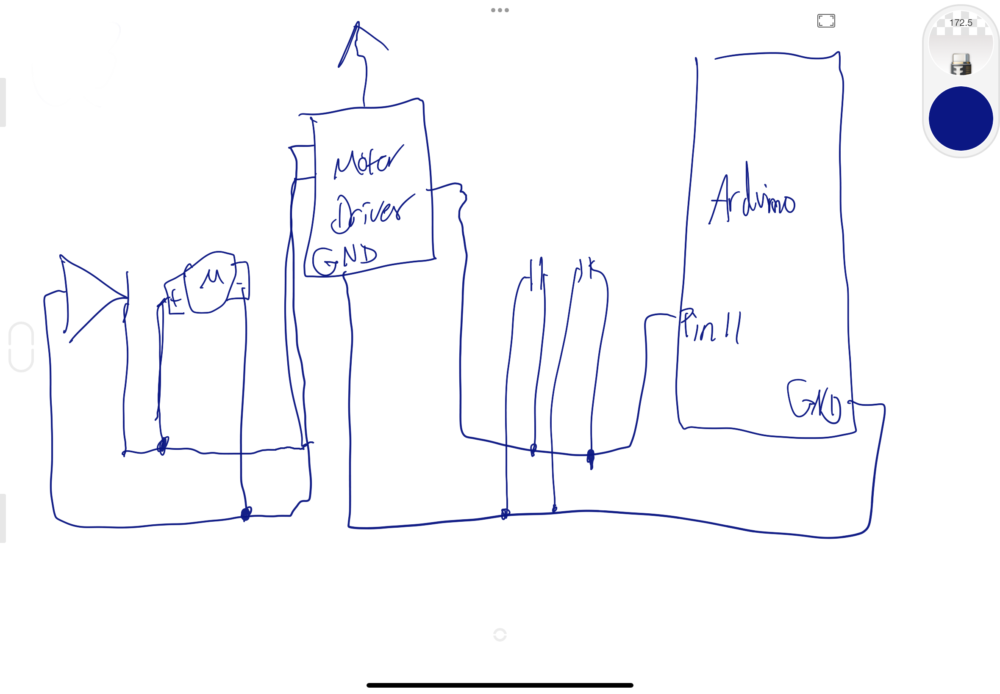

Here is all the documentation for assignment 5!
Here is all the documentation for assignment 5!
#include
// attach capacitive sensor and 1 megaohm resistor to digital pins 4 and 2 for input sensor
CapacitiveSensor cs_4_2 = CapacitiveSensor(4,2);
// attach LED strip to digital pin 11
int led = 11;
//runs once
void setup() {
//prompts the serial monitor
Serial.begin(9600);
}
//runs forever while turned on
void loop() {
// returns the number of milliseconds since the device begins running the program
long time = millis();
// filters out bad data by running a sensor check 30 times
long outputValue = cs_4_2.capacitiveSensor(30);
// check on performance in milliseconds
Serial.print(millis() - time);
// table spacing
Serial.print("\t");
// print sensor output 1
Serial.println(outputValue);
// delay to limit data to serial port
delay(10);
//checks if sensor is touched
if (outputValue > 300) {
// fade in from min to max in increments of 10 points
for (int i = 0; i <= 255; i += 10) {
// sets the value to LED strip
analogWrite(led, i);
// 30 millisecond delay
delay(30);
}
// fade out from max to mmin in increments of 10 points
for (int i = 255; i <= 0; i -= 10){
// sets the value to LED strip
analogWrite(led,i);
// 30 millisecond delay
delay(30);
}
}
}

This is a top view of the physical circuit.
This is a top view of its schematic.
Q1: This is the datasheet for the n-mosfet transistor: https://www.diodes.com/assets/Datasheets/DMT6009LCT.pdLinks to an external site.f What is the absolute maximum amount of current between pins 2 and 3?
According to the datasheet, the absolute maximum amount of current between pins 2 and 3 is 80 A.
Q2: Draw a schematic for a circuit with using at least your arduino, a DC motor, a flyback diode, and capacitors between power and ground. Find parts with datasheets you could use for each of these schematic components.
Q3: Here is the datasheet for the L293D chip: https://www.ti.com/product/L293DLinks to an external site.. Draw a schematic using at least your arduino, this chip, and two motors. Write (pseudo) code that shows how you would move the motors both forward, both back, then one forward one back, and one back then forward.